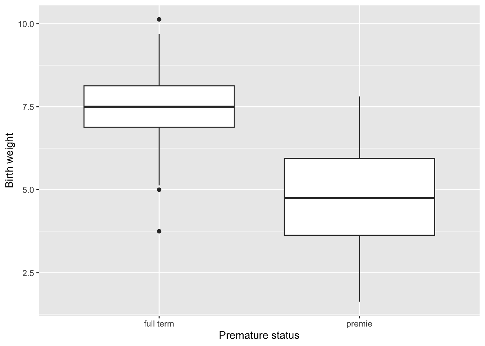
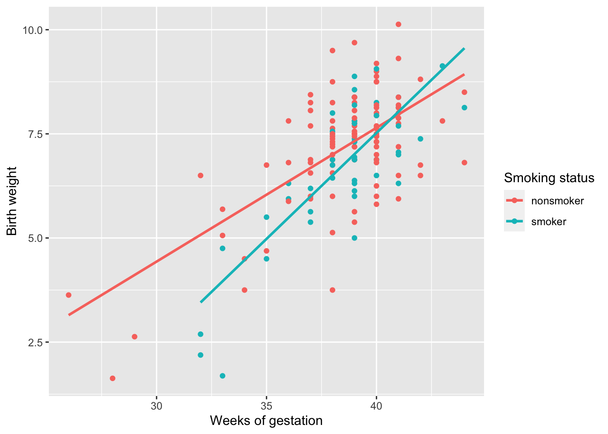

Zoos |>
filter(Acreage > 200) |>
group_by(City) |>
summarise(mean(Number_of_lions))Midterm
IDS 702 - Fall 2024
| First name: | ________________ | Last name: | ________________ |
| Net ID: | ________________ |
I hereby state that I have not communicated with or gained information in any way from my classmates during this exam, and that all work is my own.
Signature: _________________________________
Any potential violation of Duke’s policy on academic integrity will be reported to the Office of Student Conduct & Community Standards. All work on this exam must be your own.
- You have 75 minutes to complete the exam.
- You are not allowed a cell phone, even if you intend to use it for checking the time, music device or headphones, notes, books, or other resources, or to communicate with anyone other than the professor during the exam.
- Write clearly.
The exam has 18 questions: 15 multiple choice questions and 3 short answer questions. Question 16 has parts a-c, question 17 has parts a-d, and question 18 has parts a-c. Before you begin, make sure your exam has all questions.
Multiple Choice (3 points each)
- In statistics, we use data that describes a __________ drawn from a __________ to address a __________ of interest.
a. population; sample; research question
b. population; sample; linear regression
c. sample; population; research question
d. sample; population; linear regression
- You are exploring a dataset that contains information about zoos in the United States. The dataset is called
Zoos, each row represents a single zoo, and variables includeCity,Acreage, andNumber_of_lions. Which piece of code would correctly calculate the average number of lions by city for zoos that encompass more than 200 acres?
a.
b.
Zoos |>
group_by(Acreage > 200) |>
filter(City) |>
summarise(mean(Number_of_lions))c.
Zoos |>
filter(Acreage > 200) |>
group_by(City) |>
mutate(mean(Number_of_lions))d.
Zoos |>
group_by(Acreage > 200) |>
filter(City) |>
mutate(mean(Number_of_lions))- Using the
Zoosdata described in #2, say you’ve created a new variable calledAcreage_highthat takes a value of 1 if a zoo’s acreage is greater than 200 and 0 otherwise. Which piece of code would appropriately perform a quality control check to make sure this variable was created correctly?
a.
Zoos |>
group_by(Acreage) |>
summarise(min(Acreage_high),max(Acreage_high))b.
Zoos |>
filter(Acreage_high) |>
summarise(mean(Acreage),median(Acreage))c.
Zoos |>
filter(Acreage_high) |>
mutate(mean(Acreage),median(Acreage))d.
Zoos |>
group_by(Acreage_high) |>
summarise(min(Acreage),max(Acreage))- Which of the following is true about boxplots and histograms?
a. Boxplots are useful for visualizing summary statistics (median, range, IQR), while histograms are useful for visualizing the shape of a variable
b. Boxplots and histograms are useful for visualizing the distribution of categorical variables
c. Boxplots are useful for visualizing interaction terms, while histograms are useful for visualizing categorical variables
d. Boxplots and histograms both clearly label the mean of a variable
- Which of the following is NOT a step in the process of cleaning numeric variables?
a. Checking for missing values
b. Creating a subset of the data with the select function
c. Checking for implausible values
d. Using as.numeric() if the variable is stored as a character variable
e. Performing a quality control check
- What is the difference between implausible values and outliers?
a. Implausible values should never be removed from a dataset during the cleaning process, while outliers always have to be removed
b. Implausible values are values that are impossible to observe in real life, while outliers are values that stick out from the rest of the data but are still realistic
c. Implausible values are values that should be numeric but are stored as character in R, while outliers are character values that are stored as numeric
d. There is no difference between implausible values and outliers
- A health dataset contains a categorical age variable that takes values “<18,” “18-40,” “41-64,” and “65+.” Which piece of code correctly creates a continuous variable called
agefrom this categorical variableage_category?
a.
HealthData <- HealthData |>
mutate(age=case_when(age_category=="<18" ~ "less than 18",
age_category=="18-40" ~ "18 to 40",
age_category=="41-64" ~ "41 to 64",
age_category=="65+" ~ "greater than 65"))b.
HealthData <- HealthData |>
mutate(age=case_when(age_category < 18 ~ "<18",
age_category <= 40 ~ "18-40",
age_category <= 64 ~ "41-64",
age_category > 65 ~ "65+"))c.
HealthData <- HealthData |>
mutate(age_category=case_when(age < 18 ~ "<18",
age <= 40 ~ "18-40",
age <= 64 ~ "41-64",
age > 65 ~ "65+"))d. A continuous age variable cannot be created from the categorical age variable
- Which R function is useful for counting the number of missing values in a numeric variable?
a. summary
b. glimpse
c. mutate
d. as.numeric
- Which type of question can NOT be answered with a linear model?
a. On average, how much does \(Y\) change per increase in the variable \(X\)?
b. On average, per increase in \(Y\), how much does \(X\) change?
c. What is the predicted value of \(Y\) for a given value of \(X\)?
d. What is the average value of \(Y\) when \(X=0\)?
- What is the difference between \(\beta\) and \(\hat{\beta}\)?
a. \(\beta\) is an estimate that describes the population, while \(\hat{\beta}\) is an unknown quantity using the sample
b. \(\beta\) is an unknown quantity that describes the sample, while \(\hat{\beta}\) is an estimate using the population
c. \(\beta\) is an estimate that describes the sample, while \(\hat{\beta}\) is an unknown quantity using the population
d. \(\beta\) is an unknown quantity that describes the population, while \(\hat{\beta}\) is an estimate using the sample
- What does it mean to fit a linear model?
a. Calculate the residuals using the fitted model
b. Compute the coefficient estimates by minimizing the sum of squared residuals
c. Calculate the outcome estimates by minimizing the coefficient estimates
d. Compute the residuals by maximizing the objective function
- Which statement is true about \(R^2\)?
a. \(R^2\) is a proportion because the total variance of \(Y\) is always greater than the sum of squared residuals
b. \(R^2\) will always decrease when adding predictors to a regression model
c. An \(R^2\) value of 0 indicates a perfect model and an \(R^2\) value of 1 indicates a poor model fit
d. \(R^2\) is interpreted as the proportion of variability in the predictors that is explained by the outcome
- Why is it often important to use multiple linear regression instead of simple linear regression?
a. Multiple linear regression extends simple linear regression by assessing the relationship between a numeric predictor and a categorical outcome
b. Multiple linear regression extends simple linear regression by assessing the relationship between a numeric predictor and a numeric outcome
c. Multiple linear regression allows for the control of variables that are related to both the independent variable and the outcome
d. Multiple linear regression allows for the control of correlated predictor variables
- Which of the following is NOT true about interaction terms in a linear model?
a. Interaction terms assess the effect of one predictor on the outcome based on the value of a second predictor
b. Interaction terms can be included in a model based on the research question or exploratory data analysis
c. Interaction terms can generate different slopes for a continuous predictor for different levels of a categorical predictor
d. Interaction terms should be used if two predictors both have an effect on the outcome
- In the model below, \(x_1\) is a numeric variable, while \(x_2\) and \(x_3\) are indicator variables. What is the correct interpretation of the \(\hat{\beta}_4\) coefficient estimate?
\[Y=\beta_0+\beta_1x_1+\beta_2x_2+\beta_3x_3+\beta_4x_1x_2+\beta_5x_1x_3+\epsilon\]
a. The difference between the effect of \(x_2\) on \(Y\) for \(x_1\) compared to the reference level
b. The difference between the effect of \(x_1\) on \(Y\) for \(x_2\) compared to the reference level
c. The average value of \(Y\) for \(x_2\) compared to the reference level
d. The average increase of \(Y\) per unit increase of \(x_2\) compared to the reference level of \(x_1\)
Short Answer
Questions 16-18 use a dataset containing information on 150 births in North Carolina in 2004.
Codebook:
- m_age
-
Mother’s age.
- weeks
-
Weeks at which the mother gave birth.
- premature
-
Indicates whether the baby was premature or not.
- weight
-
Birth weight of the baby (lbs).
- Smoke
-
Whether or not the mother was a smoker.
Question 16 (12 points)
a. Using the codebook above and the output below, which two variables need to be cleaned? Justify your answer.
Rows: 150
Columns: 5
$ m_age <int> 30, 36, 35, 40, 37, 28, 35, 21, 20, 25, 19, 34, 19, 33, 27, …
$ weeks <int> 39, 39, 40, 40, 40, 40, 28, 35, 32, 40, 32, 40, 41, 38, 39, …
$ premature <fct> full term, full term, full term, full term, full term, full …
$ weight <chr> "6.88", "7.69", "8.88", "9", "7.94", "8.25", "1.63", "5.5", …
$ Smoke <chr> "smoker", "Nonsmoker", "nonsmoker", "smker", "nonsmoker", "s…b. Imagine that you find a value of “thirty” in the weeks variable. You create a cleaned version of the variable called weeks_clean to correct this value to 30. Describe how you can use the code below to perform a quality control check of your cleaned variable.
births |>
count(weeks, weeks_clean)c. Based on the plot below, do premature babies or full term babies have birth weights with a greater interquartile range? Do premature babies or full term babies have a higher median birth weight?

Question 17 (16 points)
a. Which two variables in the births dataset can NOT be used as an outcome in a linear regression model? Justify your answer and assume that you have cleaned the dataset.
b. Write the theoretical model that regresses weight on m_age, weeks, and premature. Be sure to define each term (i.e., “Y= —–”).
c. Using the output below, write the fitted model.
# A tibble: 4 × 5
term estimate std.error statistic p.value
<chr> <dbl> <dbl> <dbl> <dbl>
1 (Intercept) -4.35 2.10 -2.07 0.0404
2 m_age 0.0270 0.0142 1.90 0.0594
3 weeks 0.281 0.0509 5.52 0.000000153
4 prematurepremie -1.01 0.398 -2.54 0.0121 d. Write interpretations for the coefficient estimates of the weeks and premature variables.
weeks:
premature:
Question 18 (12 points)
a. Write the theoretical model in mathematical notation that best matches the plot shown below. Be sure to define each term.

b. Write the implied linear models in mathematical notation for each level of smoking status. You do not need to define the terms again.
- Smoker:
- Nonsmoker:
c. In 2-3 sentences, describe what is being compared with the code below and the conclusion you can draw using the output.
Mod1 <- linear_reg() |>
set_engine("lm") |>
fit(weight~weeks+smoke, data=births)
Mod2 <- linear_reg() |>
set_engine("lm") |>
fit(weight~weeks*smoke, data=births)
glance(Mod1)$adj.r.squared[1] 0.4760701glance(Mod2)$adj.r.squared[1] 0.496444